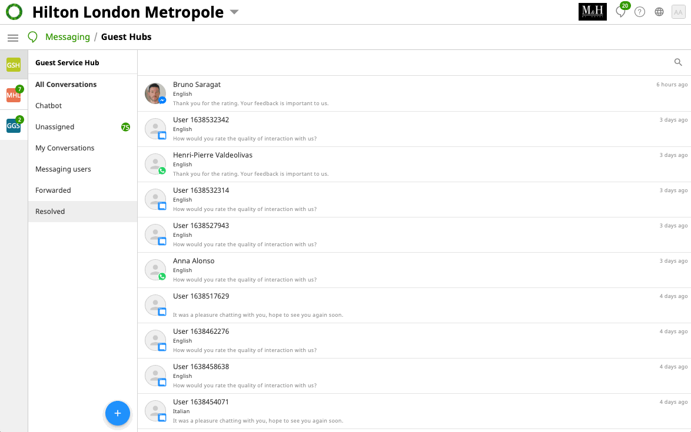

ReviewPro: Scaling
Guest Intelligence.
Redesigning the messaging hub to normalize high-concurrency streams and implement AI-driven agent suggestions.
Unified
Omnichannel.
The challenge was unifying fragmented data from WhatsApp, WeChat, and Webchat into a single "Source of Truth" for hotel staff.
- Real-time status synchronization
- Multi-concurrency stream handling

Live Interface: Omnichannel Message Aggregation ↗

Technical Logic: State Machine for Notifications ↗
State-Based
Orchestration.
I architected the logic flow for notifications, ensuring that agents are alerted based on intent-priority rather than just "last-in" chronology.
"By categorizing guest messages via intent classification, we reduced response times for critical requests by 40%."
Knowledge Base
Integration.
Worked on the integration between the Knowledge Base and the chat interface. The system analyzes incoming queries and suggests verified snippets to the agent.
Official Documentation
Review the public-facing technical guides and feature documentation for the Shiji Messaging Hub.
View Doc Center ↗